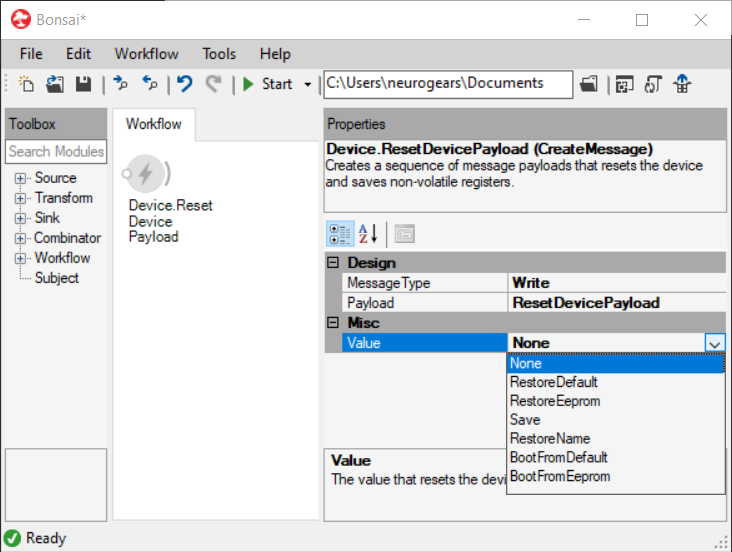

Operators
The Bonsai.Harp package provides the following operators:

It is fundamental to understand the function of each of these operators as they are the building blocks of any Harp application. Furthermore, when working with a particular model of a Harp device using Bonsai, device-specific variants of these same operators are provided in the high-level interface for that device.
Together, these operators provide all core functionality for generating and processing HarpMessage sequences. These operators allow issuing commands to, and handling sequences of notifications from, the Device node.
In order to generate messages and issue commands to the device two core operators are provided: CreateMessage and Format. Both operators receive a single input and are able to generate a HarpMessage object. However, they differ on how the message is generated.
Conversely, the FilterRegister, FilterMessageType, and Parse operators can be used to filter and convert incoming messages.
Device
The Device operator is the first node you will probably add to your workflow when using any Harp Device. This source is responsible for establishing a serial connection link with the device and providing an interface that can be used to send and receive messages, represented by HarpMessage objects. Messages sent from the host application into the node represent commands to be sent to the device, whereas message objects emitted by the device node represent command replies or events sent by the device to the host.
Note
The Device node also provides a default editor that allows you to configure core device settings and upload new firmware to the board in the form of .hex files. To open this dialog you can simply double-click the node while the workflow is not running.
The current specification of the Harp Protocol defines three Harp Message Types:
Read: A command from the host to the device requesting a read from a register. The device should respond with aHarpMessageobject containing the value stored in the specified register. All registers are expected to allow read access, as by protocol specification.Write: A command issued by the host to the device to request the update of a particular register value. As per the protocol standard, if the write operation is completed successfully, the device should return a timestampedHarpMessageof theWritetype indicating the moment when the register was set to the new value.Event: The only message type that is emitted by the device to the host without a corresponding request command. These messages are used to notify the host of events that occur on the device, such as periodic computations (e.g. ADC reads), or other sporadic events (e.g. toggle on a digital input pin).
CreateMessage
The CreateMessage operator will construct a HarpMessage object using the operator properties. The message will be constructed whenever the input sequence emits a value, or once at the start if no input is specified.
Take as example the following hypothetical HarpMessage:
Address: 32
MessageType: Write
Length: 1
PayloadType: U16
Payload: 10
To generate and send the above message payload to the device, we can use CreateMessage as follows:
Format
The Format operator will use the values in the input sequence to generate the HarpMessage payload. Conceptually, the latter operator is similar to other conversion and serialization methods present in several programming languages, such as String.Format in C#.
For example, to generate and send the above message payload to the device, we can also use Format as follows:
FilterRegister
In its simplest form, FilterRegister works as a Condition operator that checks, for each incoming message, whether the message address matches the one specified in the operator properties. If the condition is not met, the message is discarded.
Note
The default filtering behavior can be inverted by changing the FilterType property, i.e. to allow every message that does not match the specified address, set the filter type to Exclude.
For example, the below workflow implements a filter that accepts only the 1 Hz heartbeat events from any Harp device:
FilterMessageType
It can be useful to filter only specific message types, in addition to filtering specific registers, e.g. selecting only the Read messages. The FilterMessageType operator will filter messages based on their MessageType property and can be used in combination with the previous operator.
For example, to listen only to the echo emitted from the device (i.e. a Write message) after a preceding CreateMessage or Format operators, one could use the following workflow:
Parse
While FilterRegister can be used to filter incoming messages from specific registers, every single HarpMessage object in the sequence will be returned in its raw format. However, in most cases we are interested in extracting, and converting, the value of the message payload to a native value that we can more easily manipulate.
This is where the Parse operator comes handy. This operator will extract and parse the payload of any incoming message and return a new sequence of parsed values. The type of the parsed value will depend on the PayloadType of the incoming message.
For instance, if the PayloadType is U16, the operator will return a sequence of ushort values. The following workflow implements this example conversion:
Note
If the Address property is specified, the Parse operator will filter the incoming sequence for matching messages prior to applying the conversion operation.
High-level device interfaces
All the previous examples assume that you know the Address of the register you are trying to manipulate. However, given the growing number of registers, and the number of different boards, it becomes increasingly difficult to keep track of what function each Address corresponds to. To help with this issue, all the previous nodes are defined as polymorphic operators.
Polymorphic operators are operators that can change their function and properties depending on their specific type. For example, changing the Payload property of the CreateMessage operator to a specific register name will cause the operator to automatically refresh its properties to match the Payload structure of the register specification.
This morphing behavior:
Allows creating Harp messages of any type without previous knowledge of register specification. For example to create a
Readpayload for theWhoAmIregister it is sufficient to set the following properties:MessageType: Read Payload: WhoAmIPayload --- Value: 0For registers with
Enum-like payloads, allows easy access to available values via a drop-down menu:
For registers with a complex structure, allows easily, and simultaneously, manipulating the different fields to compose a message. For example, the following properties are exposed when selecting the payload for the
OperationControlregister:MessageType: Write Payload: OperationControlPayload --- DumpRegisters: False Heartbeat: Disabled MuteReplies: False OperationLed: Off OperationMode: Standby VisualIndicators: Off
The above polymorphic operators in Bonsai.Harp expose access only to the set of core registers, i.e. the Harp common registers that all devices must implement.
To access device-specific functionality, you need to download and install Bonsai packages targeting each specific Harp device. Once installed, the packages will expose additional operators in the toolbox, identical, in name and syntax, to the others previously described here. These device-specific operators will show-up with a different namespace, and will be able to target device-specific registers.
Device pattern
The previous sections covered the basic functionality of the Bonsai.Harp library. In theory, all the previous operators could function, in parallel, by branching and merging HarpMessage data streams to and from the Device node. For example:
However, as a workflow grows, this pattern can quickly become too cumbersome to manage. To address this issue, we recommend using Subjects to interact with the Device node using the pattern below:

The pattern is assembled by first adding a PublishSubject to the right side of the Device node. This will allow us to receive the stream of HarpMessage objects from that specific device in multiple places in our workflow, which eliminates the need for explicitly branching the original data stream:
While the PublishSubject takes care of sharing the output of the Device node (i.e. to handle incoming messages), we usually also want to send (or write) commands to the device from several independent branches.
To allow for this, we will add a Behavior Subject to the left of the Device node, as an input. This source subject can be referenced, and written to, from anywhere in your workflow by using MulticastSubject to send HarpMessage values:
Note
We tend to prefer BehaviorSubject over PublishSubject for the command source. The Device node will terminate the connection with the Harp device if it receives any OnComplete event. BehaviorSubject will discard this event, and is disposed only at the end of its enclosing scope. Therefore by using a BehaviorSubject we ensure that the connection with the Harp device will never terminate while your workflow is running.